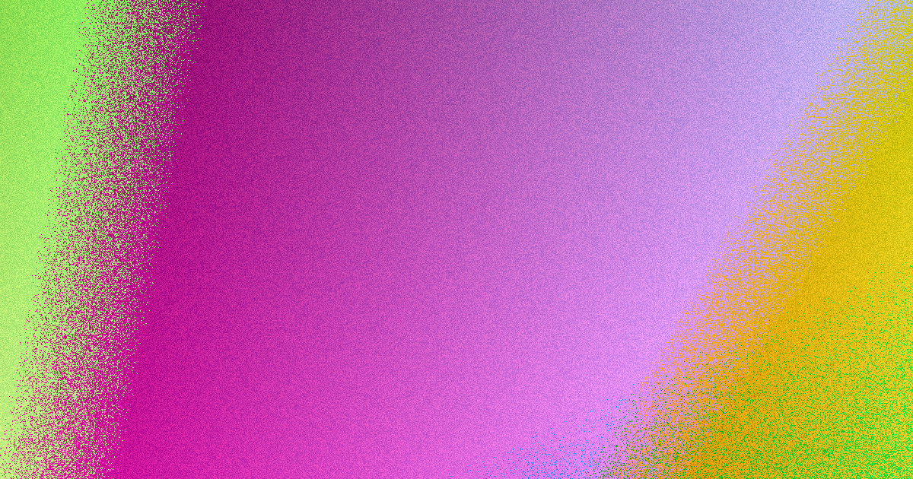

On the Sunshine Coast, retaining wall costs vary from $150‑$300 per square metre for rock and boulder to $550‑$750 for concrete sleepers and core‑filled block, with pricing based on wall face area (height × length) and excluding excavation, drainage, engineering and certification. Council permits are required for most walls, with concurrence for walls over 2 m and engineered designs needed for walls over 1 m or those carrying a surcharge. Choose the material that matches local ground conditions and verify contractor licensing before quoting.
For local buyers, retaining walls sunshine coast costs Use this guide to compare costs, approvals, and wall types for Sunshine Coast projects.
Retaining Walls Sunshine Coast Costs Explained
The published guide for retaining walls sunshine coast guide lists indicative wall‑face rates that owners should treat as starting points. Rock and boulder walls are the most affordable at $150‑$300 per square metre, while gabion baskets sit at $250‑$430. Timber sleepers range from $300‑$450, concrete sleepers from $550‑$700, and core‑filled besser block from $550‑$750. All figures exclude GST, excavation, drainage, imported backfill, engineering and certification, so a low quote may simply reflect omitted scope. Pricing is calculated on wall face area - height multiplied by length - not lineal metres, meaning two walls of the same length but different heights can have very different costs. The guide's example of a 1.2 m high, 10 m long wall equals 12 square metres, illustrating why face area is the fair comparison metric.
Approval and certification requirements
Sunshine Coast Council requires a building permit before construction, modification or repair of most retaining walls. A concurrence approval is also needed for walls over 2 m. For walls over 1 m or those that carry a surcharge (such as a driveway or structure above), the guide points to an engineered pathway that includes AS 4678 design and Form 15 (design) and Form 16 (inspection) certification. These are not optional extras; they shape timing, consultant involvement and final scope. Owners should ask for written confirmation that permits, engineered design and certification are included in the quote before excavation begins. The same guide notes that QBCC licensing is triggered by the value of the building work, not the height of the wall, which means a low‑cost garden terrace may still require a licensed contractor if the work value exceeds the threshold.
Choosing the right wall type for local ground
Ground behaviour on the Sunshine Coast varies widely. The Blackall Range features basalt clay, Buderim has volcanic soil, Landsborough sits on sandstone and coastal dune sand dominates the plain. The guide matches wall types to these conditions: concrete sleeper walls are the workhorse for replacement work and cut‑and‑fill blocks; timber sleeper terraces suit low garden falls; core‑filled besser block handles taller, rendered and engineered jobs; rock and boulder walls are ideal for acreage sites with room to batter back into the slope; gabion baskets excel where scour, runoff or erodible ground shape the problem. Behind every wall sits the same subsoil drainage requirement, and taller walls need an engineered retaining wall pathway with AS 4678 design, Form 15 and Form 16. The provider's network includes QBCC‑licensed specialists who carry out the work, ensuring licensing aligns with work value rather than wall height.
Practical steps to get a reliable quote
1. Measure the wall face - record height and length, then calculate square metres (height × length). This ensures every quote is compared on the same basis. 2. Note any load above the wall (driveway, structure, surcharge) and describe the ground type as best you can (clay, sand, rock). These details separate a low garden terrace from a structural retaining job. 3. Request a detailed scope that includes drainage design, council permits, engineered design (if needed) and certification. Ask whether excavation, imported backfill and GST are included. 4. Verify the contractor's licensing and insurance; licensing is triggered by work value, not wall height. 5. Use the provider's cost calculator and approval checklist to run preliminary questions against your own wall before collecting quotes. This pre‑screening often narrows the material choice and highlights where engineered design will be required.
Why professional licensing matters
QBCC licensing is tied to the value of the building work, not the height of the wall. This means a modest garden terrace could still require a licensed contractor if the quoted value exceeds the threshold. Structural retaining walls are Class 10b structures designed to AS 4678, and an engineered wall is typically certified by an RPEQ via Form 15 for the design and Form 16 on inspection. The specialists in the provider's network hold the licence and carry out the work, ensuring compliance with council approval processes and building code requirements. Licensing also provides recourse if work does not meet standards, protecting owners from unlicensed operators who may lack insurance or warranty coverage.
- Calculate face area. Measure height and length, then multiply to get square metres - the basis for all cost comparisons.
- Identify load and ground. Note any surcharge above the wall and describe the local soil type to narrow material choice.
- Request full scope. Ask for drainage, permits, engineered design and certification details to avoid hidden costs.
- Check licensing. Confirm the contractor holds QBCC licensing appropriate to the work value.
- Use checklist tools. Run the provider's approval checklist and cost calculator before collecting quotes.
| Wall type | Indicative range ($/m²) | Typical use |
|---|---|---|
| Concrete sleeper | $550‑$700 | Replacement work and cut‑and‑fill blocks |
| Timber sleeper | $300‑$450 | Low garden falls and terraces |
| Besser block (core‑filled) | $550‑$750 | Taller engineered retaining and rendered finishes |
| Rock & boulder | $150‑$300 | Acresage sites with room to batter back |
| Gabion | $250‑$430 | Scour, runoff or erodible ground |
Common questions
What determines the price of a retaining wall? Price is based on square metres of wall face (height × length) and excludes excavation, drainage, engineering and certification. The guide lists indicative bands from $150‑$300 for rock and boulder up to $550‑$750 for concrete sleepers and core‑filled block.
When is a building permit required? Sunshine Coast Council requires a permit for most retaining walls and concurrence for walls over 2 m. Walls over 1 m or those carrying a surcharge need AS 4678 design and Form 15/16 certification.
How do I select the right wall material? Match the material to site conditions, concrete sleepers for replacement work, timber for low garden falls, core‑filled block for taller engineered jobs, rock for acreage, gabion for erodible ground. Consider drainage and any load above the wall.
This guide outlines how to compare costs, approvals, and wall types for Sunshine Coast retaining wall projects.